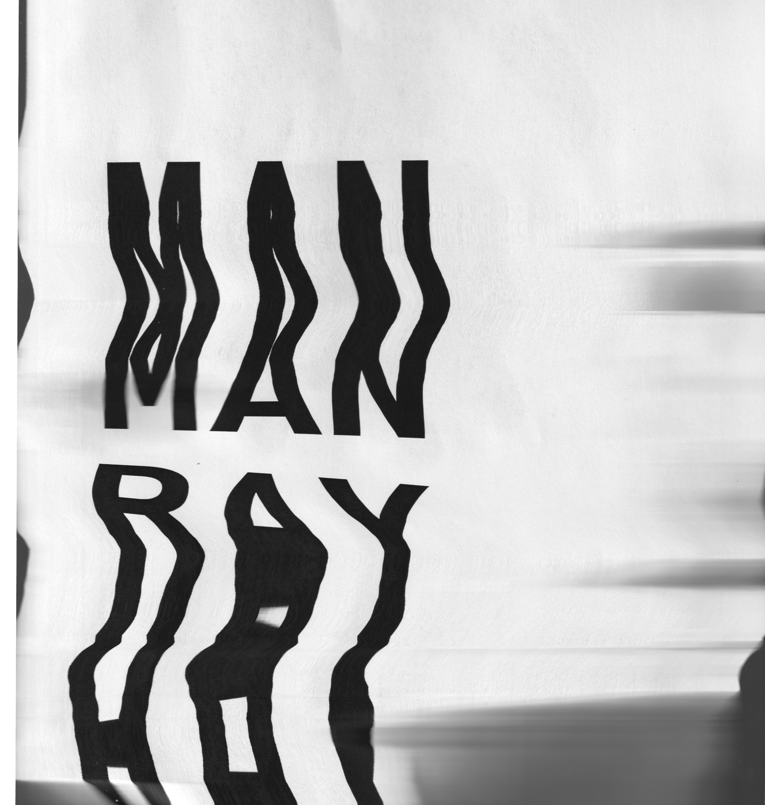
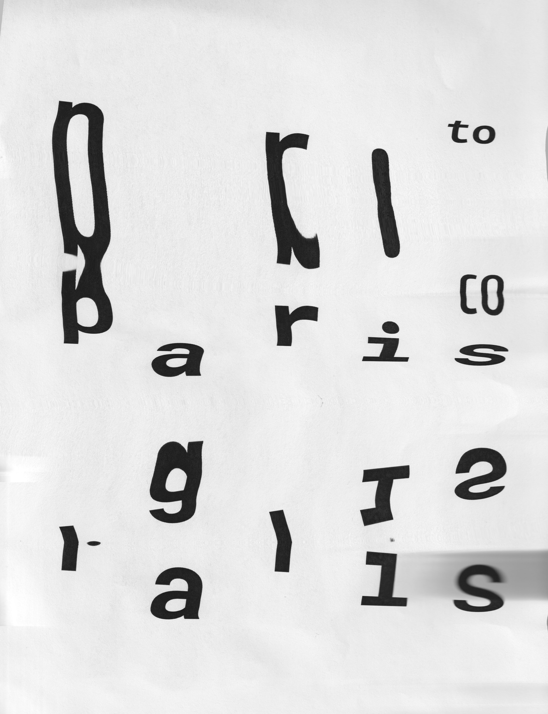

Typographic Explorations
Central to the catalogue is the use of experimental typography, serving as a key visual element to engage readers and reflect Ray's avant-garde style.



Central to the catalogue is the use of experimental typography, serving as a key visual element to engage readers and reflect Ray's avant-garde style.